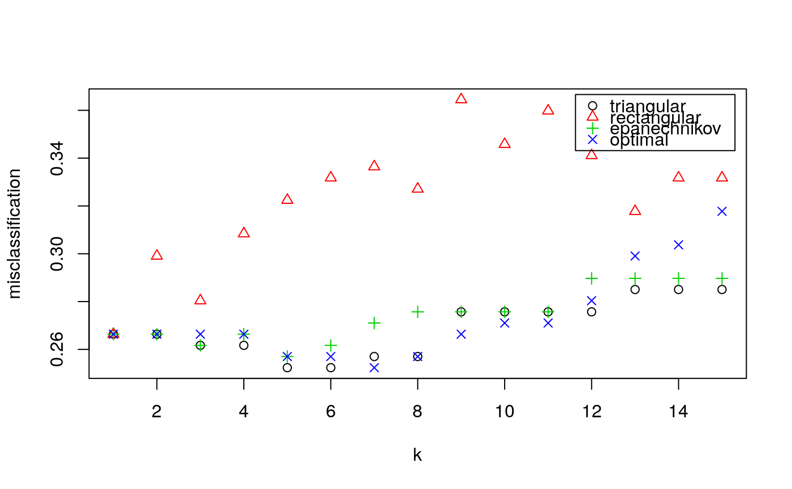
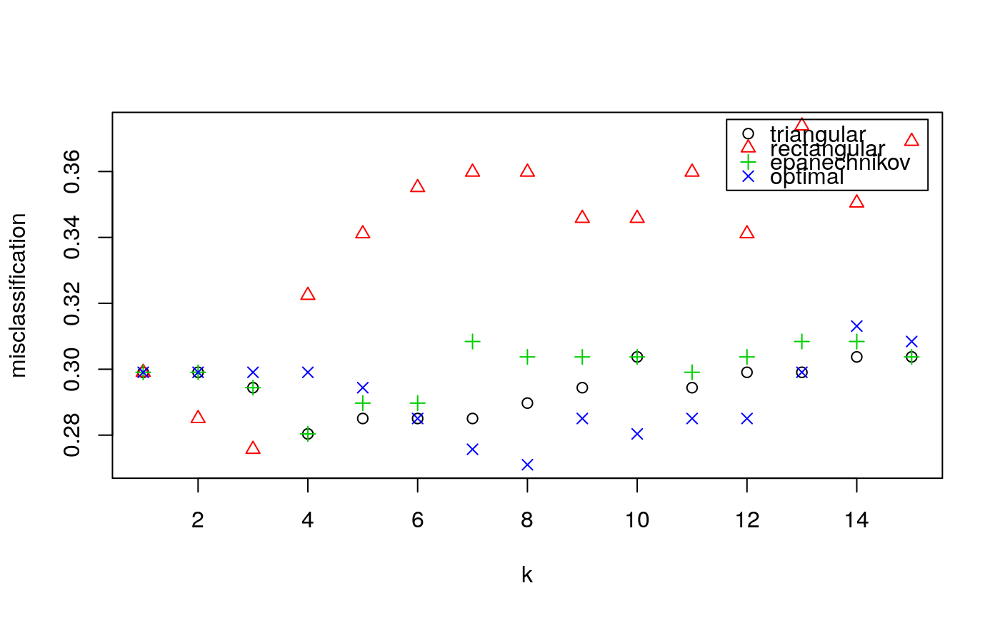

train.kknn.RdTraining of kknn method via leave-one-out (train.kknn) or k-fold (cv.kknn) crossvalidation.
train.kknn(formula, data, kmax = 11, ks = NULL, distance = 2, kernel = "optimal", ykernel = NULL, scale = TRUE, contrasts = c('unordered' = "contr.dummy", ordered = "contr.ordinal"), ...) cv.kknn(formula, data, kcv = 10, ...)
| formula | A formula object. |
|---|---|
| data | Matrix or data frame. |
| kmax | Maximum number of k, if |
| ks | A vector specifying values of k. If not null, this takes precedence over |
| distance | Parameter of Minkowski distance. |
| kernel | Kernel to use. Possible choices are "rectangular" (which is standard unweighted knn), "triangular", "epanechnikov" (or beta(2,2)), "biweight" (or beta(3,3)), "triweight" (or beta(4,4)), "cos", "inv", "gaussian" and "optimal". |
| ykernel | Window width of an y-kernel, especially for prediction of ordinal classes. |
| scale | logical, scale variable to have equal sd. |
| contrasts | A vector containing the 'unordered' and 'ordered' contrasts to use. |
| ... | Further arguments passed to or from other methods. |
| kcv | Number of partitions for k-fold cross validation. |
train.kknn performs leave-one-out crossvalidation
and is computatioanlly very efficient. cv.kknn performs k-fold crossvalidation and is generally slower and does not yet contain the test of different models yet.
train.kknn returns a list-object of class train.kknn including
the components.
Matrix of misclassification errors.
Matrix of mean absolute errors.
Matrix of mean squared errors.
List of predictions for all combinations of kernel and k.
List containing the best parameter value for kernel and k.
Type of response variable, one of continuous, nominal or ordinal.
Parameter of Minkowski distance.
The matched call.
The 'terms' object used.
Hechenbichler K. and Schliep K.P. (2004) Weighted k-Nearest-Neighbor Techniques and Ordinal Classification, Discussion Paper 399, SFB 386, Ludwig-Maximilians University Munich (https://doi.org/10.5282/ubm/epub.1769)
Hechenbichler K. (2005) Ensemble-Techniken und ordinale Klassifikation, PhD-thesis
Samworth, R.J. (2012) Optimal weighted nearest neighbour classifiers. Annals of Statistics, 40, 2733-2763. (avaialble from http://www.statslab.cam.ac.uk/~rjs57/Research.html)
kknn and simulation
library(kknn) if (FALSE) { data(miete) (train.con <- train.kknn(nmqm ~ wfl + bjkat + zh, data = miete, kmax = 25, kernel = c("rectangular", "triangular", "epanechnikov", "gaussian", "rank", "optimal"))) plot(train.con) (train.ord <- train.kknn(wflkat ~ nm + bjkat + zh, miete, kmax = 25, kernel = c("rectangular", "triangular", "epanechnikov", "gaussian", "rank", "optimal"))) plot(train.ord) (train.nom <- train.kknn(zh ~ wfl + bjkat + nmqm, miete, kmax = 25, kernel = c("rectangular", "triangular", "epanechnikov", "gaussian", "rank", "optimal"))) plot(train.nom) } data(glass) glass <- glass[,-1] (fit.glass1 <- train.kknn(Type ~ ., glass, kmax = 15, kernel = c("triangular", "rectangular", "epanechnikov", "optimal"), distance = 1))#> #> Call: #> train.kknn(formula = Type ~ ., data = glass, kmax = 15, distance = 1, kernel = c("triangular", "rectangular", "epanechnikov", "optimal")) #> #> Type of response variable: nominal #> Minimal misclassification: 0.2523364 #> Best kernel: triangular #> Best k: 5(fit.glass2 <- train.kknn(Type ~ ., glass, kmax = 15, kernel = c("triangular", "rectangular", "epanechnikov", "optimal"), distance = 2))#> #> Call: #> train.kknn(formula = Type ~ ., data = glass, kmax = 15, distance = 2, kernel = c("triangular", "rectangular", "epanechnikov", "optimal")) #> #> Type of response variable: nominal #> Minimal misclassification: 0.271028 #> Best kernel: optimal #> Best k: 8plot(fit.glass1)plot(fit.glass2)